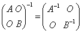

2.4 分块矩阵
一、分块矩阵的概念
把矩阵分块不仅可以带来运算上的方便，更对研究矩阵本身提供一种方法。 例如，设 如上图，我们把它分成4小块，令 ，， 则A的一个分块矩阵为。 |
|
对任意一个 （1）A的行分块矩阵或A的行向量表示法： ，其中 （2）A的列分块矩阵或A的列向量表示法： ，其中 例如： 令，则A的按列分块矩阵为。 |
二、分块矩阵的运算
|
分块矩阵的运算仅是前面矩阵运算的换一种表达方法，并没有给出新的定义，只是把小块当作元素来进行运算。 例如分块矩阵的相加就是把相应的子块相加；分块矩阵的数乘就是用数去乘每个子块；分块矩阵的转置运算，就是把子块转置过去，当然也要把每个子块转置；分块矩阵的乘法也是把左矩阵的行与右矩阵的列对应相乘再相加后，作为乘积矩阵中的子块。 这里特别要注意：为保证子块相乘是可行的，在进行分块矩阵的乘法时，必须要求左矩阵的列分块方式与右矩阵的行分块方式一般。 |
|
例1：设都是四阶方阵的列向量分块矩阵，已知，求行列式的值。 解：由分块矩阵加法， 从而 例2：设是一个用列向量表示的分块矩阵，求其转置矩阵。 解：转置矩阵是： 例3：设A为矩阵，B为矩阵，用分块矩阵表示出AB 解：AB为 若把A按行分块为，则。 特别。 |
三、特殊分块矩阵求逆
分块对角矩阵有以下性质： （1） （2）A可逆 例4：设A，B均为可逆矩阵，证明：  ， ，
证明：由分块矩阵乘法 所以 又 
所以 |